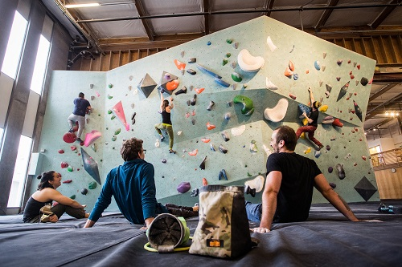
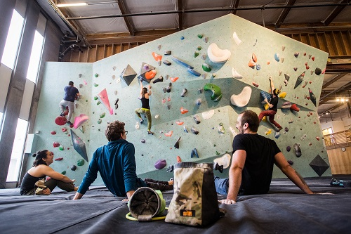
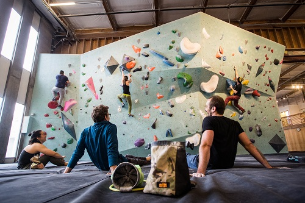

My name is Tyler Newton. I am currently a dual-enrollment student at Seattle Central College and the Year Up foundation. I am going to class for Software/App development and am lucky enough that in the Spring I will be placed in an internship with a tech company in Seattle. I am enjoying the challenges being presented to me every day and can't wait for this next step in my life!
In my free time I love to learn just about anything new. I have dabbled in fire breathing, contact and regular juggling, glass blowing, woodworking, bouldering, and in February, I plan on going to Kapowsin, Washington to get started towards my A-license in skydiving!
